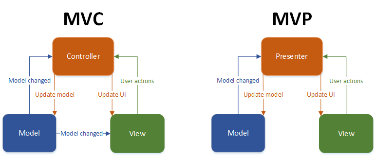
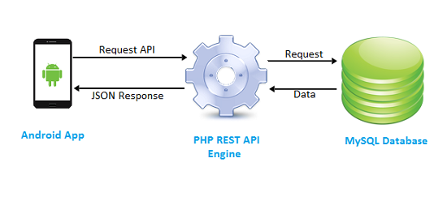
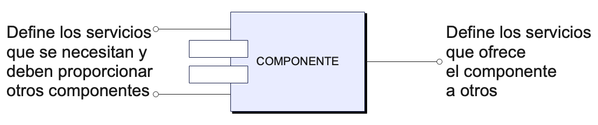
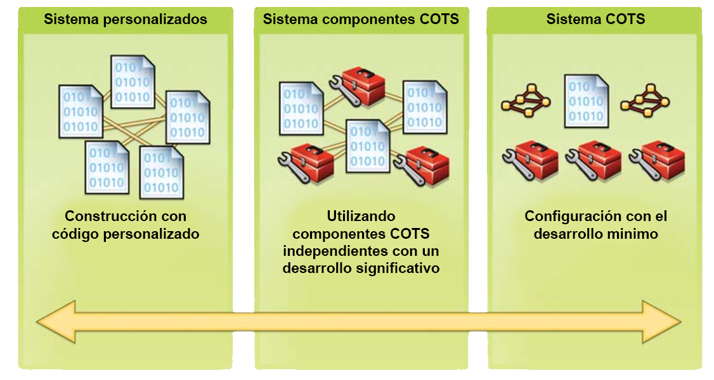
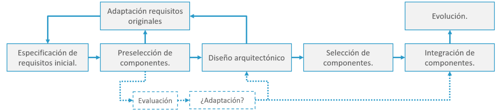
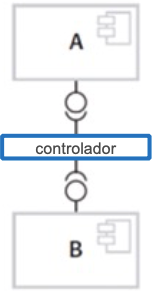
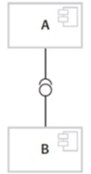
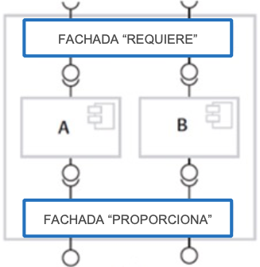

Se trata de una filosofía o estrategia que guía el desarrollo de software para aprovechar código y conocimientos generados previamente.
Los objetivos de la reutilización del software son:
Los factores que impulsan la reutilización son:
La reutilización de software va más allá de la simple reutilización de líneas de código mediante un simple copiado y pegado.
Conceptos de reutilización:
Aquí podemos considerar los manuales, tutoriales y patrones de diseño como ejemplos claros de reutilización de conocimiento. |
Enfoques de la reutilización:
| Enfoque oportunista | Aprovecha los recursos disponibles cuando son necesarios (pensando en el ahora). |
| Enfoque proactivo | Donde se considera el aprovechamiento futuro (pensando en el futuro). |
Según la cantidad de código que reutilicemos encontraremos diferentes niveles de granularidad:
| GRANO GRUESO | A nivel de aplicación y frameworks. |
| GRANO MEDIO | A nivel de componentes. |
| GRANO FINO | A nivel de objetos y funciones. |
Los niveles superiores incluyen a todos los inferiores.
Existen soluciones técnicas concretas orientadas a la reutilización del software. Por orden cronológico serian las siguientes:
El diseño de la arquitectura de un sistema es una representación de su estructura general al más alto nivel.
Los diseños arquitectónicos:

Es una solución general para el diseño de un software que debe resolver un tipo de problema frecuente.
Para que una solución sea considerada patrón:
Los patrones son en sí mismos una manera de reutilización de un diseño, pero además, están orientados a la reutilización de las clases de nuestra aplicación.
Son un conjunto de funciones reutilizables contenidas en uno o varios ficheros.
Estas funciones suelen estar agrupadas según funcionalidades relacionadas.
Están contenidas en repositorios independientes de nuestro código.
Hay que dar importancia al control de versiones debido a los cambios que se dan en las versiones de las librerías.
Aparecen dos enfoques fundamentales a la hora de reutilizar este código:
| El código que estamos utilizando de las librerías se combina con el código de nuestro programa, generando un único ejecutable de gran tamaño. | Las librerías se encuentran instaladas en el sistema operativo de manera separada del software que se utiliza. Esto provoca: - Problemas de compatibilidad de versiones. - Problemas de mantenimiento y actualización. |
La aparición del paradigma de la programación orientada a objetos (POO) está directamente relacionadas con la búsqueda de la reutilización de código.
Generalmente, las clases se agrupan en paquetes de clases relacionadas.
Abstracción: consiste en aislar una propiedad o función concreta de un objeto.
Ejemplo: tenemos la clase "Puerta". Una abstracción seria la función "abrir( )".
Encapsulamiento: El objeto contiene estado (atributos) y comportamiento (métodos).
Herencia: Jerarquias de clases que permiten heredar atributos y métodos.
Polimorfismo: permite trabajar con diferentes objetos sin importar su tipo concreto.
Un servicio es una funcionalidad que un proveedor ofrece de forma remota y puede ser considerado un componente más del sistema.

Un componente es una unidad de software independiente que se combina con otras para crear un sistema.
El componente se incluye en el sistema ofreciendo un conjunto de interfaces estandarizadas.
Características:
Cualquier componente tiene en general dos interfaces relacionadas:
Representación gráfica de componentes:

Los frameworks son un conjunto integrado de artefactos de software que colaboran proporcionando una arquitectura reutilizable para un conjunto de aplicaciones relacionadas.
Los frameworks ofrecen un entorno que guía y simplifican la reutilización:
Problemas de la utilización de frameworks:
Los productos COTS (Commercial-Off-The-Shelf) se pueden adaptar a las necesidades del cliente sin cambiar el código fuente del sistema.
| - Un único producto satisface los requisitos. - Solución genérica basada en procesos estandar. - El desarrollo es la configuración del sistema. - El proveedor es el responsable del mantenimiento. - El proveedor aporta la plataforma. |
- Se integran varios sistemas de solución. - Mayor flexibilidad de adaptación a los procesos del cliente. - El desarrollo es la integración del sistema. - El cliente es responsable del mantenimiento. - El cliente debe aportar la plataforma para el sistema. |

Define una arquitectura de colaboración e implementa el código necesario para que los componentes funcionen unos con otros.
Existen dos tipos de procesos CBSE:
Desarrollo «para» reutilización: Se centra en el desarrollo de componentes que podrán ser reutilizados.
Actualmente existen pocos fabricantes de componentes, aunque gracias a la computación en la «nube» el mercado esta creciendo.
Cuando lo introducimos en el desarrollo interno de organizaciones, hay que tener en cuenta los siguientes cambios:
Desarrollo «con» reutilización: Busca desarrollar aplicaciones nuevas empleando componentes y servicios existentes.
Esto requiere una adaptación del proceso de desarrollo:
Especificación inicial genérica de requisitos.
Adaptación de los requisitos para acomodar los componentes.
Selección e integración de los componentes.
Evolución y mantenimiento del sistema:

Composición secuencial: Se crea utilizando secuencialmente los servicios ofrecidos por el componente A, y utilizando los resultados como entrada para los servicios del componente B.

Composición jerárquica: Dos componentes se conectan directamente entre sí, de manera que es necesario que la interface requiere de A sea compatible con la interface proporciona de B.

Composición aditiva: Combino varios componentes y construyo mi propio componente reutilizable.
